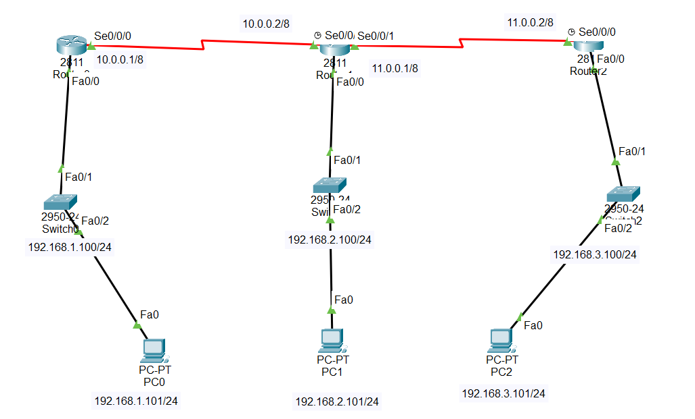

Router0:
Router(config)#router eigrp 100
Router(config-router)#network 192.168.1.0
Router(config-router)#network 10.0.0.0
Router(config-router)#exit
Router1:
Router(config)#router eigrp 100
Router(config-router)#network 10.0.0.0
Router(config-router)#
%DUAL-5-NBRCHANGE: IP-EIGRP 100: Neighbor 10.0.0.1 (Serial0/0/0) is up: new adjacency
Router(config-router)#network 11.0.0.0
Router(config-router)#network 192.168.2.0
Router(config-router)#exit
Router2:
Router(config)#router eigrp 100
Router(config-router)#network 11.0.0.0
Router(config-router)#
%DUAL-5-NBRCHANGE: IP-EIGRP 100: Neighbor 11.0.0.1 (Serial0/0/0) is up: new adjacency
Router(config-router)#network 192.168.3.0
Router(config-router)#exit